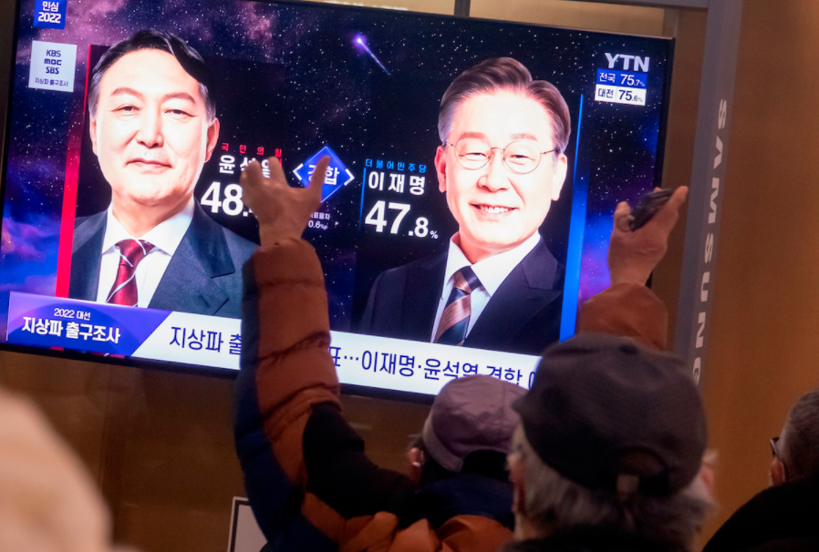
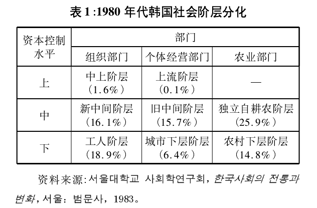
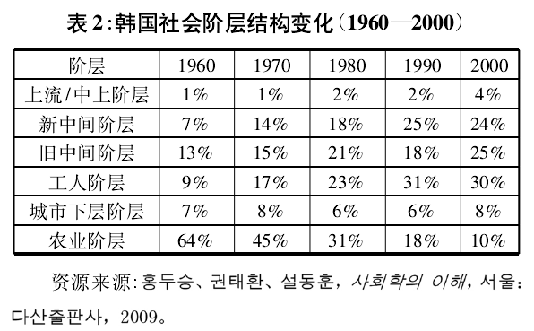
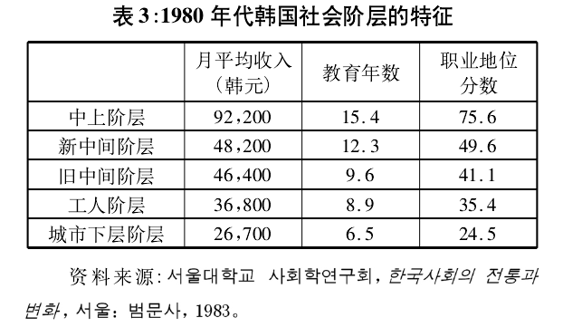
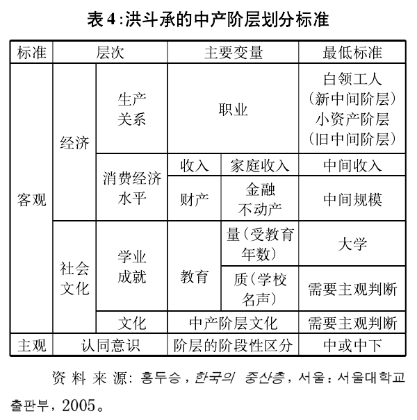
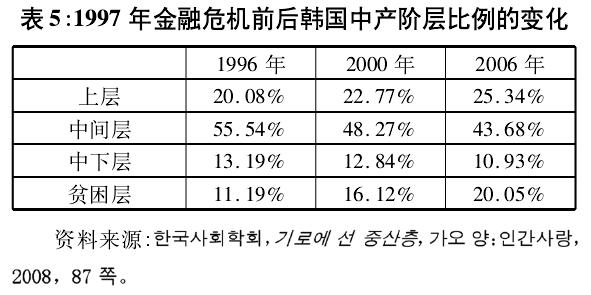
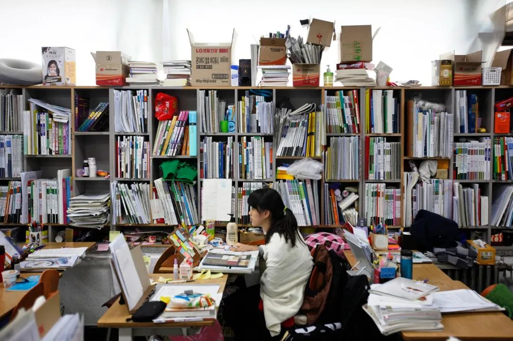

收录于合集

导读
3月10日，韩国第二十届总统选举结束，国民力量候选人尹锡悦以48.56%的得票率胜于共同民主党候选人李在明（47.83%），以微弱优势当选为韩国第20届总统。从具体选情来看，是韩国各界、各阶层、各年龄层、各地区割裂最为严重的一场大选。 选举极化是韩国社会两极分化的一面镜子 ，反映在阶层关系上，则是这样一种民间流行心态：家庭出身不好的“土勺子”，无论如何也无法超越出身好的“金勺子”。韩国社会基本上每隔十年就会出现一次重大的社会变迁。 本文重点剖析了韩国社会阶层及其社会政治态度以及最近 20 年韩国阶层分化的新的发展趋势，研究发现，在现代化转型过程中，韩国社会出现两极分化，阶层固化现象日益严重，出现了垂直型的阶层结构。 作者认为，韩国社会结构中的新问题以及阶层分化的不平衡性在很大程度上源于韩国在金融危机后推行的新自由主义经济政策极大地削弱了政府保护和调整国民经济的功能。 韩国阶层固化已成为被普遍接受的现实， 然而自认为“土勺子”的民众，却愿不投票给更重视贫困阶层利益的进步政党，出现所谓“背叛阶级投票倾向”。 这一方面是因为韩国各政党都没有完整地代表社会底层，另一方面是阶层的社会政治态度越来越脱离经济问题，相比而言，社会、国家安保和意识形态议题更具有清晰性，更容易影响投票选择。 欧亚系统科学研究会特编发此文，供读者思考。文章原刊于《国外理论动态》2020年第4期，作者为严飞、崔峨理河，来自清华大学社会学系。本文仅代表作者本人观点。
 ▲ 尹锡悦胜选后，欢呼庆祝与不满失望的人群。图源：澎湃新闻
整体而言，在过去50年的时间里，韩国社会基本上每隔10年就会出现一次重大的社会变迁。 1960年代的现代化建设帮助韩国摘掉了贫困的帽子，开始走上经济发展的道路；1970年代的新村运动与十月维新为韩国经济的进一步发展打下了全新的社会基础；1980年代的光州运动与六月运动促使韩国政府推行政治改革与政府转型；1990年代的金融危机使整个韩国社会陷入空前的金融风暴之中，导致国家经济主权受到了严重破坏；2000年代新自由主义霸权地位的确立加剧了韩国社会的劳资冲突，进一步加剧了社会阶层的分化；2010年代的烛光运动在要求朴槿惠下台的抗议浪潮中，推进了改变韩国畸形的家族式财阀经济、理顺政商关系的变革。
韩国的社会变迁推动了社会结构的调整，也对韩国社会民众的社会政治态度及其价值观产生了重要影响。伴随着阶层固化现象和社会不平等的日益加剧，关注和研究韩国各个社会群体、特别是社会下层的社会政治态度显得尤为重要。为此，本文将在梳理总结韩国学界对韩国社会结构变迁与阶层分化问题研究的基础上，重点剖析韩国社会阶层划分及其社会政治态度，以及最近20年韩国阶层分化的特点与新的发展趋势。
01
韩国社会阶层划分标准
自1960年以来，韩国社会经历了剧烈的社会转型，从落后的发展中国家转变成发达的现代化国家，与此同时，其社会结构也出现了重要变化。到1980年代，韩国的现代化建设已经取得丰硕的成果，但现代化导致的社会结构变迁也越来越显著，社会阶层划分问题因此成为韩国学界社会分层研究的一个热点话题。 社会阶层划分有很多标准，其中生产资料的占有、收入、职业、文化资源和社会资源等因素受到韩国学者们的重视。
首尔大学社会学系名誉教授，曾经担任过韩国社会学会会长、韩国调查研究学会会长等职务的洪斗承是一位专门研究社会分层问题的韩国社会学者。洪斗承在其1983年发表的《韩国社会阶层研究的预备考察》一文中指出，由于韩国社会仍然拥有比较庞大的农业人口，个体经营者在城市经济人口中占有相当大的比重，因此 韩国的阶层模型应该考虑以“部门”作为分类标准，并按照资本控制水平在每一个部门内部作出上、中、下阶层的细分。 “部门”具体可以分为三大类，分别为“组织部门”、“个体经营部门”和“农业部门”。 社会资本则包括权力、财产、声望和教育等因素。与此同时，工业化的高速发展促进了韩国城市地区的社会流动。他把社会流动分为结构流动（structural mobility）与交换流动（exchange mobility），认为韩国社会经历了比较高水平的结构流动，尤其是在工人阶层与旧中间阶层之间存在着比较大的流动性。
按职业标准，1980年代经济转型时期的韩国社会阶层可以被划分为“ 中上阶层、新中间阶层、工人阶层（组织部门）；上流阶层、旧中间阶层、城市下层阶层（个体经营部门）；独立自耕农阶层、农村下层阶层（农业部门）” 八大阶层（参见表1）。其中旧中间阶层特指个体经营者、技术工人等，新中间阶层则指专业技术人员、行政管理人员、白领职业者和知识分子，包括私营企业和外资企业中的管理人员和技术人员、中介组织和社会组织从业人员等。

在此分类的基础上，洪斗承与其合作者又进一步分析了1960年到2000年韩国阶层的变动趋势。如表2所示，1960年代以来，韩国社会结构的整体变化相对比较健康，源于现代化和城市化的高速发展，农业阶层的比重大为减少，新、旧中间阶层的比重大幅增加，工人阶层在总人口中的占比增加了三倍，韩国的社会结构从锥型结构向橄榄型结构发展。

金泳谟、具海根等韩国学者也纷纷提出了不同的阶层模型。 金泳谟将行业与职业地位作为划分阶层的标准。 他认为，韩国社会阶层可以被划分为资产阶级、新中产阶层、旧中产阶层和工人阶层。具海根认为，由于韩国社会超过一半的劳动力处于资本主义生产关系外部，只分析资本主义生产关系会存在局限性。因此，与洪斗承一样， 他也提出了“部门”的概念，并将“部门”划分为“企业部门”、“国家官僚部门”、“城市非正式部门”和“农业部门”四大类，以此作为阶层分类的重要标准。
在此基础之上，1987年，首尔大学社会科学研究所进行了一项全国范围的“中产阶层意识调查”，该调查共抽样1000余人，调查问卷包含60多个问题，涵盖社会、经济、政治、文化、日常生活等社会诸方面的内容。在调查问卷的基础上，该研究所编写了题为《韩国的中产阶层：转型时期韩国社会调查资料集》的报告。 该报告明确提出了划分中产阶层的两大标准———生活方式和人生机会，而不再采用传统的以家庭月平均收入、教育水平、房屋面积、职业地位的分数作为标准进行的阶层划分 （参见表3）。换言之，阶层的分类既要有主观标准（阶层意识），也要有客观标准（收入、学历、职业、房子等）。1990年代之后，随着韩国社会发展日益复杂而多样化，阶层划分标准也趋于多样化。此后，主观阶层意识与收入、学历等客观社会经济指标成为阶层划分的重要标准。

此外，在1980年代韩国社会的转型进程中，中产阶层发挥了关键性作用，关于这一阶层的研究也因此受到韩国学界的关注。洪斗承于2005年提出的中产阶层标准是一个比较全面的阶层划分标准。

根据洪斗承的分析， 中产阶层的定义应该包括经济（收入、财产）、社会文化（教育水平、生活文化）等客观指标与主观阶层认同这两大要素。 洪斗承指出，经济学家一般会把收入当作阶层划分的标准，收入少于中位数50%的人为贫困阶层，在50%—150%之间为中产阶层，超过150%则为上流阶层。而社会学家则会考虑收入、职业、财产、房子、阶层意识等比较广泛的因素。他指出，中产阶层应该以包括上述诸因素的“生活水平”为标准。这一论断相较于他在1983年提出的阶层模型中按职业与部门划分新、旧中产阶层的定义更进了一步，反映了1990年代以来韩国社会学界阶层研究的新趋势。
此外，一些学者从主观阶层认同的角度出发分析影响阶层划分的因素， 结果发现，出生地（出生于江源、忠清、湖南等地区的人其主观阶层意识较低，出生于首都圈的人其主观阶层意识则比较高）、婚姻（已婚者主观阶层意识较高，未婚者较低）、居住地（住在首尔的人主观阶层意识较高，住在首尔以外大城市的人较低）、居住形态（是否租房）、收入、家庭负债、对生活条件与社会关系的满足程度等因素均会影响到韩国的阶层划分。
02
韩国社会阶层的价值观取向与社会政治态度
1980年代以来，韩国学界十分关注阶层问题对社会发展的影响，有关阶层价值观与社会政治态度的研究也逐渐发展起来，成为韩国社会分层研究的一个重点。整体而言，各项研究均不同程度地发现，韩国各阶层的价值观及其社会政治态度存在显著差异。
对韩国的上流阶层/中上阶层而言，他们在意识形态上更强调发展主义 （先富论）、 民间主义 （民间企业领导经济发展）、 企业的社会性主义 （企业不仅是个人的私有财产，也是全社会的资产，因此不应过度批判企业）与 基于儒家思想的共同体主义 （强调公司与劳动者之间的共同体意识）。1960年代以来，韩国形成了政界与财界相勾结的社会结构，在这种社会结构下发展起来的韩国上流阶层/中上阶层受到了社会的批判。面对批判，中上阶层强调企业的社会职能与社会责任，提出企业的社会性主义。在企业的社会性主义逻辑下，企业不仅是个人的私有财产，也是全社会的资产，企业在其活动中为社会做贡献，因此不应过度批判企业。而发展主义强调国际经济形势对国家经济与企业构成的挑战，主张“先富论”，即为了国家的生存与发展，要“先增长后分配”，国家与社会应该全力支持企业活动。共同体主义源于传统儒家观念，强调公司与劳动者之间的共同体意识。在这种观念下，企业是一个大家庭，无论是企业主还是工人，作为大家庭的成员都应该为企业发展而奋斗。
在价值观念上，韩国中上阶层更重视个人主动性、权力、享乐主义、仁爱和成就，而相对忽视安全、遵从、普世主义、传统等价值观；更重视个人主义价值观，而忽视群体主义价值观。 一些研究强调，相比于其他阶层，中上阶层对自身阶层的经济利益更加敏感，出于自身利益的考虑，他们在经济上积极支持新自由主义与市场自由主义，但对个人自由主义的态度与其他阶层相比没有显著差异。他们倾向于提倡经济自由主义，也更支持代表上流阶层利益的保守党派。
对韩国的中产阶层而言，他们大多对社会具有批判意识，支持稳步的改革与进步，但不支持急剧的社会变革，意识形态上倾向于稳定。
第一，中产阶层的社会政治态度具有双重特点，既支持社会改革，又寻求社会稳定。 在韩国的选举中，地域感情和年龄是决定投票者政治选择的重要因素，而阶层的影响力相对较小。特别值得指出的是，新中间阶层与旧中间阶层的政治意识存在差异。即使属于同一个社会群体，中产阶层的政治意识也具有较高的可变性。例如，在1987年之前，中产阶层倾向于进步主义；而在1987年之后，由于韩国社会不断出现各种劳动纷争与社会混乱，中产阶层开始转向保守主义。此外，还有一些研究强调，应该全面准确地了解中产阶层的进步主义倾向。譬如，朴濬植关于新中产阶层态度的研究强调，虽然韩国新中产阶层倾向于进步主义，但他们的进步主义具有不连续性、选择性和双重性等特点，并且仅局限在经济领域和政治领域，而在道德伦理、文化、教育和日常生活等领域，与其他阶层一样，新中产阶层更倾向于集团主义、传统主义与保守主义。 因此，新中产阶层既可能成为社会改革的动力，也可能成为权威主义的支持基础。 正确把握新中产阶层社会政治态度的双重性，激发新中产阶层所具有的积极的一面，是影响韩国社会发展的重要问题。
第二，在韩国中产阶层中，不同的年龄、性别和教育水平群体拥有不同的价值观，其内部在价值观方面存在混乱与矛盾，缺乏共同的生活价值认同。 中产阶层中的中上层群体普遍对自身实现阶层上升的可能性具有更高的期待，对国家的未来具有更肯定的展望，对政府的信任度相应也更高。相对于中上层群体，中产阶层中的中下层群体对政府的信任度则略低。
第三，中产阶层是新政治文化的支持者和传播者。 研究显示，韩国的中产阶层普遍体现出如下特点：追求平等、分权和效率化，积极参与公共事务，经济上倾向于保守，社会议题上倾向于进步，反对地域主义，更多地关注日常生活、环境、生活福利等。韩国中产阶层在政治文化上的这些特点表明，中产阶层具有超越党派政治的分歧、为社会和谐做贡献的可能性。
对韩国的贫困阶层而言，他们十分关心教育，普遍认为教育是实现阶层上升的有效途径，再加上较强的文化认同感，所以韩国社会不存在美国社会学家奥斯卡·刘易斯（Oscar Lewis）提出的“贫困文化”现象。与此同时，在1960—1980年代的社会发展过程中，韩国社会出现了“民众”这一具有韩国社会特殊性的社会群体。有韩国学者指出，“民众”是1960年代以来韩国威权政治的产物。以军人、政府与大型企业为核心的霸权集团垄断权力，在政治、经济、社会等方面的重要决策过程中，普通群众被彻底排除在外。在这样的政治体制下，出现了 具有主权在民思想、以解决原有体制的固有矛盾和建立新的体制为目的的新的社会联盟： “民众”。 “民众”是为了反对统治阶层垄断权力而产生的被统治集团联盟，因此“民众”具有多集体联合的性质。 根据韩国学者的研究，工人、农民、城市贫困阶层都是“民众”集团的组成部分。这样的“民众”会创建自己独特的意识形态和文化符号，以区别上层阶层的精英意识形态和霸权文化，这可能是韩国不存在贫困文化的重要原因。
研究发现，“民众”具有自己独特的价值观与社会政治态度，“民众”认同是影响社会政治态度的重要因素。具有“民众”认同的人更倾向于进步主义，支持社会改革，但并不赞同激进主义。特别值得指出的是，在“民众”集团内部，阶层仍然是影响人们社会政治态度的重要因素，同时，“民众”认同也获得了部分中产阶层的支持。
总结而言，韩国各社会阶层的价值观与社会政治态度具有以下几大特点。 第一，尽管相互间存在差异，但相对于其他国家而言，阶层之间的价值观冲突并不严重。 自1960年代以来，韩国社会经历了剧烈的社会转型，保持了较高的社会流动性，大多数韩国中产阶层都是在社会流动中产生的，因此贫困阶层对自己与国家的未来具有一定的信心。
第二，在现代化过程中中产阶层的数量迅速增长，不断壮大的中产阶层在社会发展过程中发挥了重要作用。 一方面，中产阶层对社会具有批判意识，他们会在社会转型的关键时刻支持改革。另一方面，他们倾向于稳定，不希望出现急剧的社会变革。因此，中产阶层既是推动社会改革的动力，又是维护社会和谐的堡垒。
第三，在现代化转型的过程中，权威主义体制下出现了独特的被统治阶层联盟。 具有“民众”认同的社会下层展现出特定的价值倾向与社会政治态度，成为1980年代韩国政治现代化的核心力量。而同情并支持“民众”认同的中产阶层则反对激进主义，这可能是韩国民主化运动没有发展成革命的一个原因。
03
韩国社会阶层变动的最新趋向
1997年12月，韩国爆发金融危机，国家经济处于破产边缘，在国际货币基金组织的压力下，金大中政府开始采取各种改革措施。此时，早在金泳三政府时期就开始实施的新自由主义政策成为韩国政府政策改革的重要方向，并给韩国社会带来了深刻的变化。韩国学者对当代韩国社会体制的看法不尽相同，有“87体制论”、“97体制论”等。其中，“87体制论”以1987年韩国政治民主化转型并形成总统五年单任制为当前韩国社会体系的重要标志，这一体制确立了总统的绝对权力，从而导致了总统身边亲信的腐败案层出不穷。“97体制论”则高度重视1997年金融危机与新自由主义政策给韩国社会带来的深刻影响，体现了1997年金融危机对当前韩国社会结构的重要影响。
在金融危机与新自由主义政策的双重影响下，韩国社会阶层结构发生了深刻变化。 在金融危机前夕，韩国人均GDP超过1万美元，这表明韩国已经不再是拥有廉价劳动力的发展中国家。在1997年金融危机爆发之后，在“国际货币基金组织体制”下，韩国经济政策深受国际货币基金组织的干预，被迫开放国内金融市场和劳动力市场，国家经济主权遭到破坏，国家在世界市场上的控制能力大为下降。在摆脱金融危机之后，韩国政府大力培育手机、半导体、汽车等高技术产业，国民经济持续快速发展，2006年韩国人均GDP超过2万美元，2018年则达到32046美元。 然而，金融危机给韩国社会结构带来的一些严重问题至今也没有得到解决。
韩国社会学会在《处于十字路口的中产阶层》一书中指出，全球化的冲击导致韩国中产阶层衰落，给整个社会带来了结构性改变。从1990年代中期起，韩国开始出现中产阶层两极化现象，1997年的金融危机更是加剧了这一趋势。一方面，在日益激烈的国际竞争中，三星、现代等大型企业与中小型企业之间的差距越来越大；另一方面，在人均DP超过1万美元之后，除专业人才等不受国际竞争影响的少数职业群体外，以工人阶层为代表的社会群体面临严峻的国际竞争，尤其是来自东南亚等地区的廉价劳动力成为他们最主要的竞争对手。 韩国的工人阶层从全球化经济生产中的受益者转变为受害者。 此外，国际货币基金组织体制下经济主权的丧失与新自由主义政策的推行削弱了政府保护和调整国民经济的功能。 国家放弃了调整本国社会结构的部分义务，在保护弱势群体、推动社会结构健康转型的过程中，没有有效地发挥政府的主导作用和推动作用。 在这样的背景下，最近20年里韩国社会的两极化与阶层固化现象日益严重，出现了垂直型的阶层结构，导致了皮埃尔·布迪厄（Pierre Bourdieu）笔下的区隔与马克斯·韦伯（Max Weber）所说的社会封闭现象的出现。由于社会缺乏分配正义，普通大众会产生相对剥夺感（relative deprivation），从而对财团等富裕阶层产生反感。
在1997年金融危机之后，韩国民众收入的两极分化现象日益严重。如表5所示，在1996—2006年间，中间层与中下层所占比例之和从68.73%降至54.61%，贫困层的比例则几乎增加了一倍，上层的比例也趋向于增加，出现了明显的两极分化趋势。更为严重的是，这些数据并不能全面反映韩国社会两极化的严重性。韩国学者的研究表明，词典意义上的中产阶层或中等收入群体与人们普遍认为的中产阶层概念（拥有舒适的房子、不担心孩子的教育费用支出问题、过着幸福的老年生活）存在偏差，而后者所代表的主观意义上（subjective）的中产阶层在社会两极分化的情况下遭到严峻挑战，并正在趋于消失。研究发现，在1986—2018年间，韩国人均GDP从2803美元增至32046美元，增加了12倍。然而，主观意义上的中产阶层的比例从1980年代后期的60%—80%降至1990年代中期的42%，并且在1997年金融危机后进一步下降，到2013年仅为20.2%。
换言之，在韩国中等收入群体中，只有20%的人认同自己处于中产阶层。研究进一步表明，伴随着贫富差距扩大而产生的相对剥夺感是导致中产阶层的主观阶层认同消失的重要原因。 经济学家弗雷德·赫希（Fred Hirsch）提出的“增长社会限制论”（social limits to growth）指出，伴随着经济的发展，家庭支出中用于地位商品的比重会增加。在韩国，1997年金融危机之后的经济增长能够满足人们对物质商品的需求，但却无法满足人们对重要性越来越大的地位商品的需求。1996年，韩国全国共有535万个高质量岗位，有497万拥有大学以上学历的高质量劳动力。至2010年，共有581万个高质量岗位，没有显著增加，而全国的高质量劳动力则增加了一倍，达965万人，亦即几乎每2个人需要去竞争一个工作岗位，而其中的一个人不得不接受失业或者降低薪资预期的命运。 1997年金融危机之后中产阶层的衰落事实上破坏了中产阶层的阶层认同，加剧了他们的相对剥夺感。

如前文所述，韩国人普遍认为教育是实现阶层上升的有效途径，在社会流动性较大的时代，只要努力学习、考上大学，就会出现阶层上升的机会。然而，经过1997年金融危机、工作岗位出现两极化之后，就业竞争越来越激烈，只有考上以“SKY”为代表的名校，才有机会在大学毕业后找到好工作。激烈的教育竞争导致“私立教育”（private education）泛滥，阶层上升已经不再是只靠个人努力就可以解决的问题。韩国学者的研究发现，1997年金融危机之后，父亲的受教育水平及家庭背景对孩子教育成就的影响力制约着韩国社会跨阶层流动的可能性。 也就是说，在文化资本累积的过程中，经济资本的重要性变得越来越大，原本被认为是实行阶层上升有效途径的教育，现在正逐渐向阶层世袭的途径转变。

▲ 一名在光州寄宿私立学校备战大学入学考试的复读生。图源：路透网
私立教育的泛滥与教育环境重要性的增加给韩国社会分层带来了深刻的影响。 越来越激烈的教育资源的竞争导致与教育挂钩的房价扶摇直上，并从两个方面推动了阶层的固化。一方面，加强了经济资本对文化资本累积的作用；另一方面，财产而非收入成为阶层划分的决定性因素。 有韩国学者指出，目前韩国社会是一个 “房产阶级社会” ，房产才是社会阶层分化的根本原因，经济能力与社会地位由个人所拥有的房产规模决定，通过居住信息就可以推测出一个人的日常消费习惯、政治倾向与投票倾向。虽然房产不是传统意义上的阶层划分标准，但在当代韩国社会，房产已经成为判断一个人的阶层身份的重要指标。洪斗承对近期韩国社会新出现的区隔与社会封闭现象进行了分析，指出中产阶层并不愿意让自己的孩子与居住在贫困社区的孩子交往，由此可见房产阶层化带来的严重的社会后果。这种新的社会现象不仅加强了阶层固化，也加剧了阶层之间的矛盾。
伴随着阶层两极化以及阶层固化的日益严重，韩国出现了“勺子阶级论”的新观点。“勺子阶级论”是韩国关于社会阶层固化现象的一种新的说法。 它根据父母拥有资本的多少将家庭背景不同的人划分为“金勺子”、“银勺子”、“铜勺子”和“土勺子”，认为家庭出身会决定人的一生，无论“土勺子”的才能如何出众、如何积极向上和艰苦奋斗，也很难超越“金勺子”。韩国青年人普遍认为，父母拥有的资本状况，尤其是拥有经济资本的状况决定了自己的社会阶层，而个人能力对主观阶层意识的影响力越来越少，“老鸹窝里出凤凰”的情形在当代已经不大可能出现。换言之，收入水平越低，实现阶层流动的可能性就越小。与此同时，处于不同社会阶层的人与他们对阶层固化现象的认同程度之间不存在显著相关关系，这表明阶层固化已成为社会各阶层普遍接受的社会现象。此外，在政治认同层面，韩国社会目前正处于价值观的混乱时代，出现了广泛的“背叛阶层投票倾向”的新现象。所谓 “背叛阶层投票倾向” ，即下层阶层不给代表本阶层利益的进步主义政党投票，转而支持保守党。其中的典型例子是在2012年韩国总统选举中，很多下层阶层的民众投票支持保守主义政党的候选人朴槿惠。
为什么下层阶层的民众会更加倾向于支持保守主义政党？ 韩国学者的研究表明，韩国政府的管治策略与道德价值观念是下层阶层选择保守党的重要原因。保守主义一般倾向于国家主义，重视家庭，排斥社会福祉。韩国政府给社会输入了这种保守主义的道德价值观念，使下层阶层乐意牺牲自己的经济利益。特别是经济上贫乏窘困的下层阶层， 他们更重视国家安全与社会秩序，维持“韩美同盟”、维护国家安全的主张是他们的最高政治目标，并希望通过实现他们的道德价值观念获得自尊感 。 他们还认为，为维护国家安全与社会秩序，国家可以使用一些强制性手段来限制个人自由。
还有一些研究则认为，年龄是决定投票倾向的决定性因素， 收入低、受教育水平低的老年人倾向于投票给保守政党是导致出现“背叛阶层投票倾向”的重要原因。 尤其是60岁以上的下层老人，他们极力维护国家与社会秩序，并从中找到自尊感。如果控制年龄因素的影响，可以发现，受教育程度、收入水平与政策偏好之间存在着一定的相关性，收入越高，越倾向于保守主义。 然而，在现实政治选择中，年龄和地域是决定人们政治选择的决定性因素，阶层影响甚微。 有韩国学者以2003—2012年选举为对象，分析了阶层与投票倾向、政策态度之间的关系。研究表明，在控制性别、地域、年龄等变量的前提下，收入与投票倾向之间没有相关性。但主观阶层意识与投票倾向之间存在着相关关系，主观阶层意识越低的群体，越倾向于支持中间党派和进步党派。在政策态度方面，收入越高的群体，越倾向于进步主义。有韩国学者在分析社会阶层与政治态度差异时发现，与西方社会相反，韩国各阶层之间对经济议题的态度没有明显差异，不能以阶级分析的框架概而论之。相反， 对社会议题，即自由主义与保守主义价值观之间的对立问题，主观阶层意识越低的群体，则越倾向于保守主义。 而对国家安保议题，主观阶层意识越低的群体，越倾向于保守主义，重视“韩美同盟”，同时对政治制度与政党的信任度就越低。
对产生这种现象的原因，多数研究认为，这是 韩国各政党都没有完整地代表社会底层而导致的结果。 还有一个重要原因是 韩国社会分层的脱经济化，即阶层的社会政治态度越来越脱离经济问题。 首先，在社会分化与两极化状况越来越严重的情况下，同一个社会阶层内部的利益关系也趋于复杂化，甚至会出现利益冲突。其次，在全球化时代，经济体制的运作越来越复杂，普通人无法判断谁最能代表自己的经济利益。例如，目前韩国社会经济问题的热点是提高最低工资标准，这原本是一项为了缓和两极分化、提高贫困阶层工资收入、提升贫困阶层消费能力的经济政策，然而这项政策在现实中却不是那么简单易行。对贫困阶层的工人来说，由于最低工资的提高会增加雇佣者的用工成本，反而会变相导致雇佣者通过裁员来降低成本，从而增加了这些工人的失业风险，因此这些工人很难支持此项经济政策。
实际上，韩国的民主党派以及进步政党在纲领上十分重视贫困阶层的利益，在政治实践和政策活动中也更加关注贫困阶层，但却没有换来贫困阶层的完全支持。 相较而言，社会、国家安保和意识形态议题更具有清晰性，因此它们往往成为影响投票选择的重要因素。在经济利益关系越来越模糊不清的时代，不可忽视政治领导人的形象以及个人情感的特殊作用。曾带领韩国实现工业化和经济腾飞的总统朴正熙自称“贫农的儿子”、“米酒总统”，在任期间经常热情地接见新村领导人等农民干部。朴正熙当年在农民中建立起来的良好形象可能是今日韩国老年贫困阶层支持保守政党的一个主要原因。
排版 | 屈媛媛
文章为欧亚系统科学研究会编辑，文章观点不代表本平台观点。